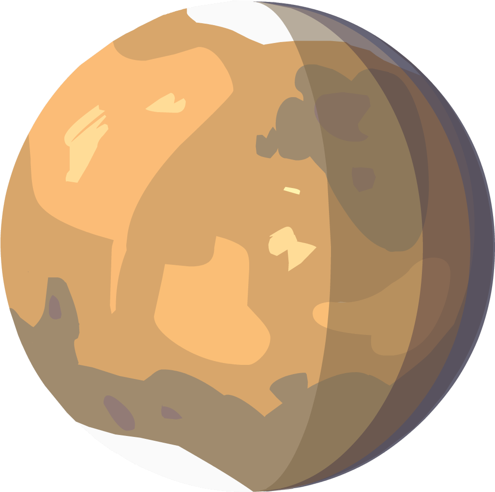

Mercur
Mercur este planeta cea mai apropiată de Soare, înconjurându-l o dată la fiecare 88 de zile pământene. În perioada 1974 - 1975, Mercur a fost studiată cu ajutorul sondei Mariner 10, care a cartografiat doar 40 - 45 % din suprafața planetei. Începând din 2011, sonda spațială MESSENGER orbitează în jurul planetei pentru a studia compoziția chimică, geologia și câmpul magnetic.

Temperatura: 179 °C
Diametru: 4,878 km
Distanta(AU): 0.4
Densitate: 5,427 kg/m^3